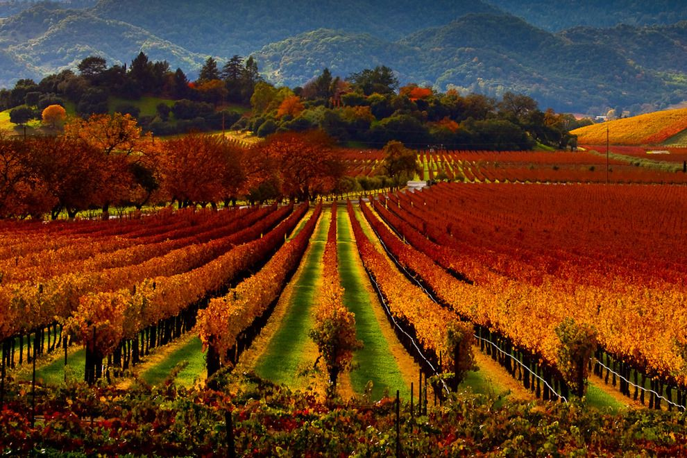

Our effort today is to provide the students and faculty of the UCSD Extension Data Sciences and Visualization program an opportunity to view our visualizations on machine learning (ML) and to display various tools and web resources we have learned in this program.
All source data and visualizations are provided for reference.
Our analysis was to determine and visualize if we could choose a better wine or similar wine based on expert and comments from wine enthusists. We used Python/Pandas with Matplotlib, Tableau, and webscraping.
Our objective is to build a series of visualizations to showcase the following:
- Machine Learning/NLP for words describing wine
- Chemistry based prediction (random forest, decision tree)
- Wine Consumption
- Mapping of California Wines
The California Wine Industry is a large part of the California economy.
- $241 Million cases of wine sold in the United States which equates to
- $35.2 Billion in retail value sold in the United States
- 90% of U.S. Wine Exports are produced in California
Statistics
California produces 81% of U.S. wine and is world’s 4th largest producer. Wine production is known to be attributed to proprietorships, mainly family-owned businesses, many multi-generational.
Wine Grape Growers
Winegrapes are grown in 49 of 58 counties. There are approximately 5,900 winegrape growers and 599,000 acres of winegrapes or (242,400 hectares) 139 American Viticultural Areas. Vineyards preserve open space and provide scenic beauty.
Economic Impact
Many wineries are owned by large conglomerates; however, consumers view the Sonoma and Napa Wine Country as private wineries each with their own ambiance and niche market. The wineries in Sonoma and Napa provide a vacation mecca for and must see destination.